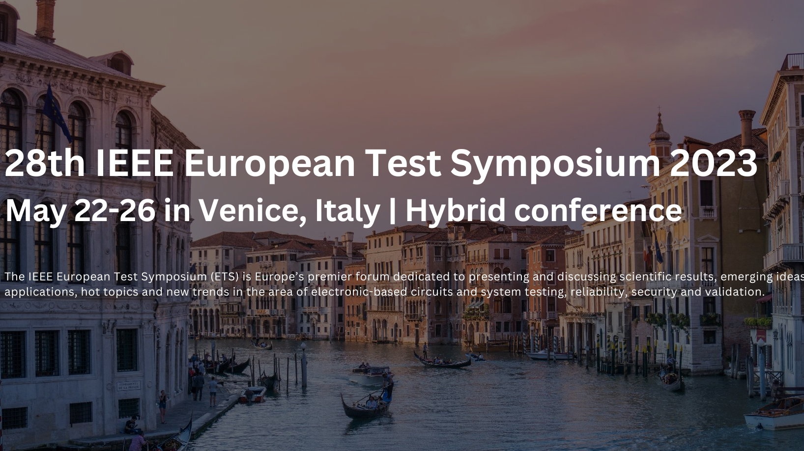

A motivated, flexible, and open-minded person looking for chances to use
and expand my expertise in Data science and Machine Learning.
I'm excited to take on new challenges and hone my interpersonal and technical abilities in a demanding
work setting.
Professional Experience
Building the Next-Gen Search Engine with Large Language Models & Retrieval Augmented
Generation
Infineon Technologies, Germany
January 2024 — Present
Designed and deployed a search engine using Large Language Models (LLM) and Retrieval Augmented
Generation (RAGs) to improve data retrieval and query responses. Analyzed and cleansed supply
chain data, developing visual analytics to predict the bullwhip effect and optimize forecast
precision. Additionally, oversaw the thorough training and onboarding of new interns.
Skills: Python, LLM, GenAI, Retrieval Augmented Generation, and
forecasting.

Working Student: Machine Learning Engineer
Infineon Technologies, Italy
Oct 2022 — April 2023
Continuation of master thesis: Developed interactive software for engineers to streamline the use
of machine learning models, enhancing operational efficiency. Refined software functionality and
data processing based on continuous user feedback, boosting user satisfaction and system
reliability. Also enhanced data analysis efficiency, enabling more informed strategic
decision-making. Skills: Software Development, Dash, Plotly, Data
Processing, and Python.

Master thesis: Automatic Pattern Recognition with Machine Learning For Post Silicon
Measurements
Infineon Technologies, Italy
May 2022 – Sep 2022
Developed machine learning software for automatic pattern recognition in post-silicon
measurements, significantly enhancing outlier detection capabilities. Involved in data
pre-processing and analysis, including sourcing and cleaning to support robust pattern
recognition algorithms. Also implemented continuous labeling for image recognition, which
improved accuracy through historical data integration. Skills:
Semiconductors, Python, Computer Vision, Machine Learning/Deep Learning, Data Analysis.

NLP Intern
Logis Technologies
July 2021 – Sep 2021
Implemented a machine learning-based text generation software to automate real estate
descriptions, thereby enhancing listing efficiency. Conducted web scraping to collect data for
model training and development. Additionally, designed a user-friendly interface that simplified
keyword input for users, streamlining interactions and improving user experience.
Skills: NLP, NLG, Text Generation, UI Design, BERT, T5, K2T, and Python.

Computer Vision Intern
AVIDEA
Aug 2020 – Sep 2020
Led the annotation of car damage images, preparing for model training with varied damage types,
and built and refined a computer vision model to detect car damage severity accurately. Enhanced
model precision was achieved by varying damage classifications during testing, which improved
predictive performance. Skills: Image Annotation, TensorFlow, Convolutional
Neural Networks (CNN), Mask R-CNN, YOLO v3, and Python.
Recent Work
AI & Python projects
Bone age prediction
By adjusting and enhancing the usual state-of-the-art deep learning techniques, predict bone age
from hand radiographs
Autonomous Vehicle Navigation
Building an Autonomous vehicle with Deep Reinforcement Learning, which uses severalAdvanced
Driver-Assistance Systems (ADAS) that assist drivers in driving and parkingfunctions, using DQN
algorithm and CARLA simulator to observe the
car in its environment.

Movie Recommendation Engine
Using Cosine Similarity to Build a Movie Recommendation System: Based on a movie the user chose
before, this program recommands new movies and Tv shows to the liking of the user

Predict House Prices
Predicting House Prices based on diffrent features with Linear Regression using TensorFlow

Sentiment Analysis
Build a logistic regression model to classify movie reviews as either positive or negative.

Handwritten Digits Classification
Creat, Train, and Evaluat a Neural Network model that will be able to predict digits from
hand-written images with a high degree of accuracy.

Predict Sales Revenue
While working with a very popular Advertising data set, we predict sales revenue based on
advertising spending through mediums such as TV, radio, and newspaper.
Web & Mobile Development Projects

Dynamic News Website
A dynamic NEWS website with a content management system developed using Bootstrap4 and its
components for the Front and PHP & MySQLi for the Backend.

Medical Journal App
A mobile application, developed using Android studio and Firebase, that helps you keep track of
your medical history by creating a medical journal containing the medicament and tests you took,
your chronic illness and the surgeries
you had.
Car renting Website
A dynamic website, developed using React js and Firebase, that gives the renting agencies as well
as car owners the opportunity to put their cars for rent.
RESEARCH PAPER
IEEE EUROPEAN TEST SYMPOSIUM 2023 :
Accepted Industrial paper under the title of Automatic Pattern Recognition
with Machine Learning For Post Silicon Measurements . The purpose of this paper is to take
advantage of
AI technologies and develop a solution to automate the pattern recognition process. More specifically,
the goal is to develop a web application that allows the user to build their own clustering
model that groups the test result data into comparable clusters whose labels are later on predicted to
make it easier to analyze.

ASSOCIATIVE ORGANIZATIONS
FELLOWS PROGRAM STUDENT:
Tunisian American Enterprise Fund (TAEF):Tunisian American Enterprise Fund's unique
objective is fostering inspiring and preparing the young generation of entrepreneurs, small business
owners, and managers while providing talented interns
to TAEF investees for 2 to 6 months period to work on pre-selected intensive projects
STUDENT ENTREPRENEUR STATUS:
Carthage StudentEntrepreneur Center:During the call for applications launched by the PEEC, for the
attribution of Student Entrepreneur status, my teammate and I have won the Entrepreneur status for our
project called MEDCITY. MEDCITY
is a platform that creates a whole network between patients and employees in the medical and paramedical
field.
PRESIDENT:
NATEG SUP'COM STUDENT CHAPTER: Helped in developing my team leading andcommunication skills
SUP'COM JUNIOR ENTREPRISE - SJE:
Sup'Com Junior Entreprise - SJE:
During my time with Junior, not only did I get the chance to get to know amazing people and widen
my network but I also participated in the organization of several events such as “Le Phare Tunisien”,
and "Jet'xpo". In addition to
all the social skills I gain during this year, I also developed my Web developing skills where I learned
HTML, CSS, PHP, and Laravel.